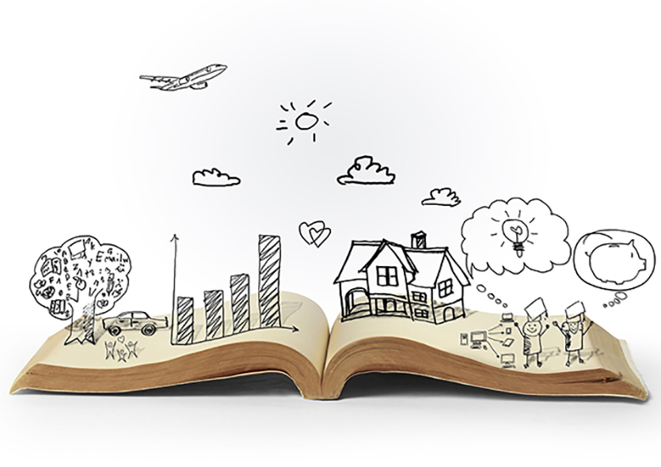

Δες τι υπάρχει εδώ:

Το γλωσσικό χιούμορ συνεπάγεται την παραβίαση, σε μια δεδομένη περίπτωση, μιας από τις ακόλουθες γενικές γλωσσικές αρχές:
Άλλα λέω, άλλα κάνω και άλλα εννοώ
Πολλές φορές άλλο λέμε και άλλο εννοούμε. Για παράδειγμα, αν ακούσετε στον δρόμο να φωνάζει κάποιος σε έναν άλλο: "Καλά, ε; Πέτυχα χθες μια ζαργάνα άλλο πράμα!"
Είστε πραγματικά σίγουροι για το τι ακούσατε; Ο αγαπητός μας φίλος πήγε τάχα για ψάρεμα ή μήπως είχε μια... υπέροχη γνωριμία με μια γυναίκα που τον εντυπωσίασε;
Ένα κενό ανάμεσα σ' αυτό που γίνεται και σ' αυτό που θα έπρεπε να γίνεται
Γυρνάτε σπίτι έπειτα από μια κουραστική μέρα στη δουλειά και σίγουρα το τελευταίο με το οποίο θέλετε να ασχοληθείτε είναι οι δουλειές του σπιτιού.
Ωστόσο, ενώ νομίζετε ότι τα έχετε όλα συμφωνημένα, ποιος θα κάνει ποιες δουλειές και πότε, μπαίνετε στην κουζίνα και αντικρίζετε έναν νεροχύτη πιάτων γεμάτο με πιάτα.
Γυρνάτε τότε στο αγαπημένο σας έτερο ήμισυ και αναφωνείτε: "Τι καλά που έχουμε πλυντήριο πιάτων, τι άσκημα που δεν βάζει μέσα μόνο του τα πιάτα!"
| ΟΜΟΗΧΑ | ΕΚ ΠΑΡΑΔΡΟΜΗΣ | ΑΡΓΚΟ | ΜΕΤΑΦΟΡΙΚΗ ΧΡΗΣΗ | |
|---|---|---|---|---|
| Χα! | Δανεικός - Δανικός | Αμαρτωλός - Αρματολός | Ακατοίκητο | Σηκώνω χέρι |
| Χα χα! | Κλείνω - Κλίνω | Επιβολή - Επιβουλή | Γαργάρα | Τα είπαμε ένα χέρι |
| Χα χα χα! | Σήκω - Σύκο | Τεχνικός - Τεχνητός | Γαύρος | Λύνω τα χέρια |
| Χα χα χα χα! | Χήρος - Χοίρος | Άπλητος - Άπλυτος | Θάψιμο | Δίνω τα χέρια |